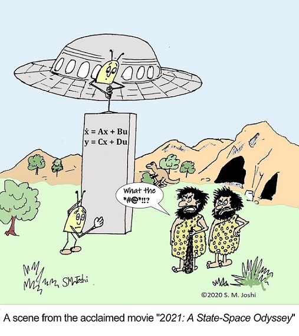

|
Teoria dei Sistemi 2021/22 — LM Ingegneria Meccatronica • Univ. Padova
Informazioni generali
|
 |
Descrizione:
Il corso si propone di fornire strumenti e tecniche avanzate per l’analisi e il controllo di sistemi dinamici.
Ci concentreremo sull'approccio in spazio di stato e considereremo, per la gran parte del corso, sistemi lineari e tempo invarianti a tempo continuo e discreto.
Analizzeremo prima le proprietà fondamentali di questi sistemi (soluzioni, stabilità, raggiungibilità, osservabilità, etc.) per poi studiare tecniche di controllo in retroazione.
Il corso prevede una parte di programmazione in MATLAB®.
[Image credits: http://controlcartoons.com]
📌 Informazioni e programma indicativo
📌 Pagina offerta formativa UniPD
📌 Pagina moodle DTG ➡︎ Iscrizione obbligatoria!
|
News:
📣 08/04/22: L'homework del corso verrà rilasciato entro giovedì 14/04/22. Nella lezione di giovedì mattina 14/04/22 del modulo B verranno date alcune istruzioni per il suo svolgimento.
Ricevimento:
🚪 Venerdi ore 14:00 via Zoom fino a fine semestre e/o su appuntamento.
Orario lezioni:
Lunedì 16:30-18:30, Aula VM16
Mercoledì 14:30-16:30, Aula VM17
Giovedì 10:30-12:30 + 14:30-16:30, Aula VM17
🔗 I link Zoom per partecipare alle lezioni e al ricevimento saranno resi disponibili nella pagina moodle del corso.
🗓 Per un calendario sempre aggiornato delle lezioni ed esami dell'intero corso integrato (Modulo A+B) si faccia riferimento al Google calendar del corso.
Testo di riferimento:
📝 Appunti e slides delle lezioni.
Testi per consultazione:
📕 M. Bisiacco, S. Braghetto. “Teoria dei sistemi dinamici”. Società Editrice Esculapio, 2 Ed., 2010.
📗 E. Fornasini. “Appunti di teoria dei sistemi”. Ed. Libreria Progetto Padova, 2013.
📘 E. Fornasini, G. Marchesini. “Esercizi di teoria dei sistemi”. Ed. Libreria Progetto Padova, 1997.
📙 J. P. Hespanha. “Linear systems theory”. Princeton University Press, 2018.
Calendario esami:
I appello:
○ Consegna Homework: 20/06/22, ⏱ 23:59.
○ Orale: 23-24/06/22, Aula VM12.
II appello:
○ Consegna Homework: 01/07/22, ⏱ 23:59.
○ Orale: 06-07/07/22, Aula VM12.
III appello:
○ Consegna Homework: 29/08/22, ⏱ 23:59.
○ Orale: 01-02/09/22, Aula VM12.
IV appello:
○ Consegna Homework: 12/09/22, ⏱ 23:59.
○ Orale: 15-16/09/22, Aula VM12.
Materiale utile per l'esame:
📝 Esercizi e temi d'esame risolti degli anni scorsi sono disponibili alle pagine web del corso degli scorsi A.A. (2019/20, 2020/21).
FAQs:
Come è strutturato l'esame?
L'esame del modulo A (Teoria dei Sistemi) è composto da un homework (10 punti) ed una prova orale (5 punti). L'homework consiste in una breve relazione scritta su un problema di analisi e controllo di un sistema dinamico e contiene delle parti da svolgere in MATLAB. Al punteggio di homework o orale possono venire aggiunti 2 punti extra, a discrezione del docente, per premiare impegno, ordine, chiarezza, etc. Sia il modulo A che il modulo B hanno un punteggio massimo di 17 punti. Il voto finale del corso integrato (modulo A+modulo B) è dato dalla somma dei voti dei due moduli (arrotondata per eccesso in caso di mezzo voto). Un voto finale \(\geq\) 31 corrisponde a 30 e lode.
Quando verrà reso disponibile l'homework?
L'homework verrà reso disponibile qualche giorno dopo il termine delle lezioni del modulo A.
Ho consegnato l'homework, quando posso sostenere l'orale?
L'orale può essere sostenuto in un qualsiasi appello entro e non oltre il 28 febbraio 2023.
Posso consegnare l'homework del modulo A e la relazione di laboratorio del modulo B in appelli diversi?
Sì è possibile, purché entrambi vengano consegnati in appelli non successivi al 28 febbraio 2023.
Ho già consegnato l'homework, ma vorrei rifarlo. Posso?
No. Una volta consegnato l'homework non è possibile rifarlo.
E se non supero l'esame a causa di un punteggio troppo basso (\(\le\) 4) nell'homework?
In questo caso l'esame verrà interamente sostituito da un esame orale (ovviamente più approfondito di quello standard).
Posso usare un qualsiasi editor di testo per scrivere la relazione?
Sì è possibile usare un qualsiasi editor di testo. Tuttavia poiché ci saranno delle equazioni da scrivere è fortemente consigliato l'utilizzo di LaTeX. Per chi volesse, verrà reso disponibile un template LaTeX di relazione. In ogni caso, la relazione andrà consegnata in formato pdf.
Posso far riferimento al materiale didattico usato negli scorsi A.A.?
Anche se il programma del modulo A rimane pressoché invariato rispetto a quello degli scorsi A.A., ci saranno delle modifiche di alcune parti del materiale didattico. Il nuovo materiale didattico relativo ad un argomento verrà reso disponibile in questa pagina web ed in moodle qualche giorno prima delle lezioni in oggetto. Si consiglia fortemente di utilizzare il materiale didattico aggiornato di quest'anno.
Ho superato la prova scritta nello scorso A.A., ma mi manca l'orale. Posso sostenere solo la prova l'orale?
Se il voto della prova scritta è ancora valido, può sostenere la prova orale. Se il voto della prova scritta è scaduto, dovrà sostenere l'intero esame secondo le nuove modalità.
Non ho MATLAB installato nel mio computer. Come faccio?
L'Università di Padova mette a disposizione dei suoi studenti una licenza gratuita per l'installazione e utilizzo di MATLAB. Si faccia riferimento a questa pagina per ulteriori informazioni. In alternativa, è possibile utilizzare MATLAB attraverso una macchina virtuale (quindi senza doverlo installare nel proprio computer) grazie al Progetto Taliercio 2020 dell'Università di Padova (contattare la segreteria didattica per maggiori informazioni).
Le esercitazioni MATLAB sono facoltative?
No, le esercitazioni MATLAB sono a tutti gli effetti ore di lezione e sono quindi parte integrante del corso. Inoltre alcuni parti dell'homework richiederanno l'utilizzo di MATLAB.
Lezioni e materiale didattico
| lezione | contenuti | slides | slides annotate | extra/note |
| 28/02/22 | Introduzione al corso,
concetto di sistema dinamico | Lezione 1 | – | Breve video
sull'ingegneria del controllo |
| 02/03/22 | Classificazione di sistemi,
rappresentazione in spazio di stato | Lezione 2
Lezione 2 (2x2)
Lezione 2 (2x1+N) | Lezione 2 | Articolo Kalman |
| 03/03/22 | Esempi di modelli in spazio di stato | Lezione 3
Lezione 3 (2x2)
Lezione 3 (2x1+N) | Lezione 3 | Simulazione sistema preda-predatore
(Lotka-Volterra) |
| 03/03/22 | Equilibri, definizioni di stabilità,
linearizzazione | Lezione 4
Lezione 4 (2x2)
Lezione 4 (2x1+N) | Lezione 4 | – |
| 07/03/22 | Richiami di algebra lineare | Lezione 5
Lezione 5 (2x2)
Lezione 5 (2x1+N) | Lezione 5 | – |
| 09/03/22 | Complementi di algebra lineare,
forma di Jordan | Lezione 6
Lezione 6 (2x2)
Lezione 6 (2x1+N) | Lezione 6 | – |
| 10/03/22 | Soluzioni di sistemi lineari autonomi,
esponenziale di matrice | Lezione 7
Lezione 7 (2x2)
Lezione 7 (2x1+N) | Lezione 7 | – |
|
10/03/22 | MATLAB®: Introduzione | -- | -- | Vedere pagina moodle
per il materiale |
| 14/03/22 | Modi elementari, evoluzione libera e
forzata a tempo continuo | Lezione 9
Lezione 9 (2x2)
Lezione 9 (2x1+N) | Lezione 9 | – |
| 16/03/22 | Modi elementari, evoluzione libera e
forzata a tempo discreto | Lezione 10
Lezione 10 (2x2)
Lezione 10 (2x1+N) | Lezione 10 | – |
| 17/03/22 | Stabilità di sistemi lineari e non-lineari (cenni) | Lezione 11
Lezione 11 (2x2)
Lezione 11 (2x1+N) | Lezione 11 | – |
|
17/03/22 | MATLAB®: Simulazione di un segway | -- | -- | Vedere pagina moodle
per il materiale |
| 21/03/22 | Raggiungibilità a tempo discreto,
criterio del rango | Lezione 13
Lezione 13 (2x2)
Lezione 13 (2x1+N) | Lezione 13 | – |
| 23/03/22 | Ingresso a energia minima,
forma canonica di raggiungibilità, test PBH | Lezione 14
Lezione 14 (2x2)
Lezione 14 (2x1+N) | Lezione 14 | – |
| 24/03/22 | Controllabilità a tempo discreto | Lezione 15
Lezione 15 (2x2)
Lezione 15 (2x1+N) | Lezione 15 | – |
| 24/03/22 | Raggiungibilità e controllabilità a tempo continuo | Lezione 16
Lezione 16 (2x2)
Lezione 16 (2x1+N) | Lezione 16 | – |
| 28/03/22 | Introduzione al problema di controllo,
esempi di controllo in retroazione dallo stato/uscita | Lezione 17
Lezione 17 (2x2)
Lezione 17 (2x1+N) | Lezione 17 | – |
| 30/03/22 | Retroazione dallo stato con un ingresso | Lezione 18
Lezione 18 (2x2)
Lezione 18 (2x1+N) | Lezione 18 | – |
|
31/03/22 | MATLAB®: Controllo di un segway (parte 1) | -- | -- | Vedere pagina moodle
per il materiale |
| 31/03/22 | Retroazione dallo stato con più ingressi,
stabilizzabilità | Lezione 20
Lezione 20 (2x2)
Lezione 20 (2x1+N) | Lezione 20 | – |
| 04/04/22 | Osservabilità e ricostruibilità a tempo discreto | Lezione 21
Lezione 21 (2x2)
Lezione 21 (2x1+N) | Lezione 21 | – |
| 06/04/22 | Osservabilità e ricostruibilità a tempo continuo,
dualità | Lezione 22
Lezione 22 (2x2)
Lezione 22 (2x1+N) | Lezione 22 | – |
| 07/04/22 | Stimatori dello stato, rivelabilità,
sintesi del regolatore | Lezione 23
Lezione 23 (2x2)
Lezione 23 (2x1+N) | Lezione 23 | – |
|
07/04/22 | MATLAB®: Controllo di un segway (parte 2) | -- | -- | Vedere pagina moodle
per il materiale
|
- Parte I: Modelli, soluzioni, stabilità di sistemi dinamici
- Parte II: Analisi e controllo di sistemi dinamici lineari
- MATLAB®
|